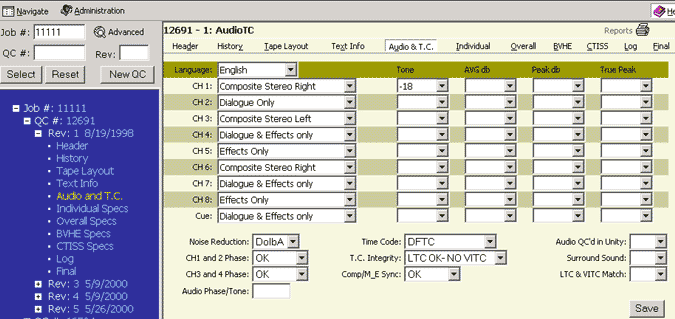

Alt+u then ENTER will take you to this page or clicking on AUDIO & TC in the menu bar on the right side. You can also click on the word AUDIO & TC in the Tree Frame (blue area).

The Audio & T.C. page displays fields for the following information which includes:
|
|
A number of fields include pull down menus with predetermined choices. After entering the information please click the SAVE button to save your data.